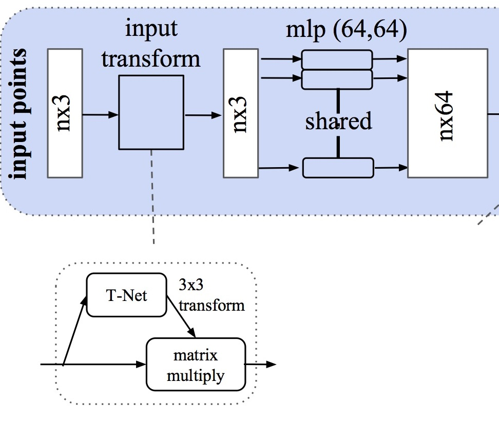
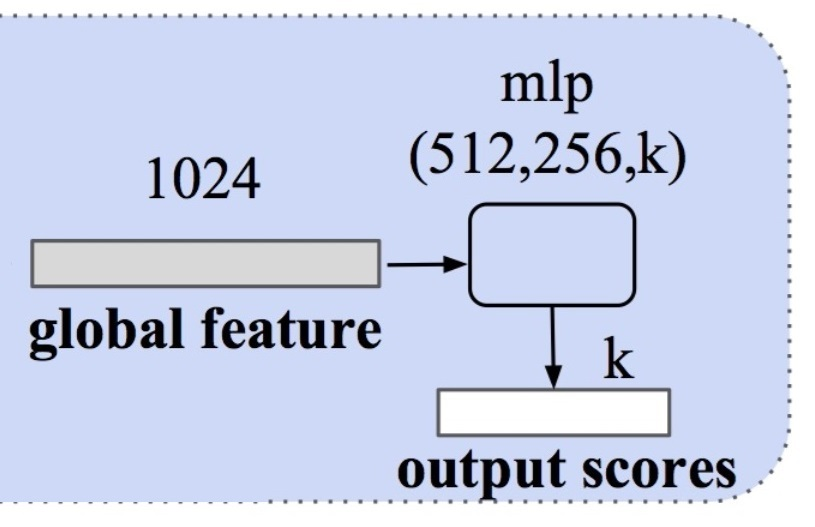
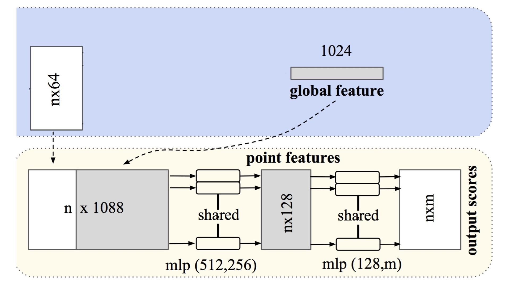

Identificación 3D con PointNet#
Una nube de puntos está definida por una colección de puntos (x,y,z) que define una escena. A ellos se puede unir otros atributos relacionados, como puede ser el color (r,g,b) u otros parámetros del espectro electromagnético que devuelve el sensor utilizado para capturar la información de la misma.
Cuando se dispone de información que estructura los puntos, como puede ser una triangulación, una envolvente convexa o una forma alfa basada en vértices o caras, se habla de malla.
Alguna de las operaciones más importantes que se pueden aplicar a las nubes de puntos son:
Segmentación: Dividir la imagen en regiones de interés, identificando cada una de las partes.
Clasificación: de la nube en una determinada categoría.
Detección: es una extensión de la clasificación en la que se reconocen objetos de la escena y se localizan mediante un cuadro limitador.
Los primeros enfoques del procesado de nubes de puntos se basaban en el uso de cuadrículas y su convolución. Hay primero un procesamiento que se encarga de convertir las nubes de puntos en grids con un número de vóxeles fijos ([Wu et al., 2015]). Siendo un vóxel un pixel 3D. Al grid 3D se aplica procesos de convolución 3D como los vistos en el tratamiento de imagenes 2D y unas capas de clasificación de redes densas. El rendimiento de los métodos basados en vóxeles es bueno, pero tienen un alto consumo de memoria debido a la dispersión de los vóxeles. La dispersión provoca pérdidas de cálculo a la hora de convolucionar en regiones no ocupadas, sumándose a las pérdidas producidas por la representación volumétrica.
Otros métodos se basan en aplicar convoluciones 2D a multiples vistas bidimensionales ([Su et al., 2015]) generadas con proyecciones 2D desde diferentes posiciones giradas. Estas redes muestran mejores resultados que los métodos basados en vóxeles. Además, no arrastran las pérdidas producidas en la representación volumétrica.
CNN espectrales sobre mallas que está restringidos a mallas tubulares de objetos orgánicos ([Bruna et al., 2013])
PointNet ([Qi et al., 2017]) consume nubes de puntos simples (x,y,z) lo que evita las irregularidades combinatorias y las complejidades de las mallas. Respeta que la nube de puntos es invariante a las permutaciones de sus elementos y considera otras invariancias de los movimientos rígidos.
PointNet toma como entrada una nube de puntos y devuelve su clase para el conjunto de la nube o clase por punto generando una segmentación. En el formato básico la entrada son coordenadas (x,y,z), aunque se pueden añadir dimensiones calculando las normales y otras características locales o globales.
Una de las claves de la aproximación de PointNet es el uso de una única función simétrica de agrupación (max pooling). La red aprende una serie de criterios que seleccionan puntos de interés de la nube y codifica la razón de su selección. Finaliza con una red densa que agrega la clase global o para predecir la clase por punto.
Point Features : las características de los puntos a menudo codifican ciertas propiedades estadísticas de los puntos y están diseñados para ser invariantes a ciertas transformaciones, intrínsecas o extrínsecas.
La arquitectura PointNet se inspira en las propiedades de un conjunto de puntos en \(\Re^n\):
Desordenados: implica que una nube de \(N\) puntos se debe tratar con una red invariante a las \(N!\) permutaciones.
Interacción entre puntos: debe ser capaz de capturar estructuras locales desde puntos cercanos, y sus interacciones combinatorias.
Invariante ante transformaciones: las rotaciones y translaciones de puntos no deben modificar la categoria asignada.
La estrategia usada por PointNet para ser invariante a las permutaciones de la nube de entrada es usar una función simétrica simple para agregar la información de cada punto. La solución sencilla de ordenar no funciona en un espacio de alta dimensión. Tampoco sirven las redes neuronales recurrentes (RNN), usadas para modelar series temporales, y que son invariantes a bloques de pequeña longitud, como docenas. La función simétrica se aproxima con:
Donde \(h : \Re^N \rightarrow \Re^K\) y \(g : \Re^K \times ... \times \Re^K \rightarrow \Re \)
PointNet aproxima h con un perceptron multicapa (MLP) y g por una composición de una función de una variable y una función de agrupación máxima (max pooling). A través de una colección de h’s, se puede aprender un número de f’s para capturar diferentes propiedades del conjunto.

La salida de la sección anterior forma un vector \([f_1, . . . , f_K]\), que es un distintivo global del conjunto de entrada. Se podría tratar de clasificar con un perceptron multicapa, sin embargo la segmentación requiere de una combinación de conocimientos locales y globales.
Después de calcular el vector de características de la nube de puntos global (global feature), se concatenan las características globales con cada una de las características de puntos. Luego, se extraen nuevas características por punto en función de las características de punto combinadas; esta vez, la característica por punto “conoce” información local y global (point features).
El etiquetado semántico de una nube de puntos tiene que ser invariante a transformaciones geométricas. Para hacer esto PointNet predice una matriz de transformación afin usando una mini-red que se denomina T-net en el gráfico anterior y que aparece implementada en el código de este cuaderno en la clase Tnet(nn.Module). Esta matriz se aplica directamente a las coordenadas de la nube de puntos de entrada. T-net está compuesta por módulos de extracción de características de los puntos, agrupación máxima y capas totalmente conectadas.
Esta idea se extiende al espacio de características (feature transform en el esquema anterior), pero la matriz de transformación tiene una dimensión considerablemente superior (64 vs 3), lo que aumenta en idéntica medida la dificultad de optimización.
Por tanto, se agrega un término de regularización a la función de pérdida de entrenamiento softmax. Y se ajusta la matriz de transformación de características para que esté cerca de la matriz ortogonal:
Donde \(A\) es la matriz de alineación de características (64x64) predicha por T-net en el paso feature transform.
Qi demuestra que la función f(S) se pude aproximar con \(\gamma(\displaystyle\max_{x_i \in S}(h(x_i)))\), donde S es la nube y max en un agrupador de máximo o max pooling.
La arquitectura utilizada para programar PointNet en el presente cuaderno es Pytorch.
import os
import numpy as np
import itertools
import math, random
random.seed = 42
import torch
from torch.utils.data import Dataset, DataLoader
from torchvision import transforms, utils
from pathlib import Path
import scipy.spatial.distance
import plotly.graph_objects as go
import plotly.express as px
import matplotlib.pyplot as plt
from sklearn.metrics import confusion_matrix
En función de los indicadores booleanos siguientes es posible parametrizar el funcionamiento del cuaderno. Así activando a True cada uno de ellos:
googleColaboratory: el cuaderno trabaja en un entorno Google Colaboratory.
entrenamiento: no accede al fichero pre-entrenado y realiza un nuevo entrenamiento. Es recomendable realizarlo en Colaboratory con entorno de ejecución CPU o TPU.
downloadModel: descarga de un alojamiento en línea el archivo ModelNet10.zip con un set de entrenamiento y validación de nubes con 10 etiquetas posibles.
unzipModel: descomprime el fichero zip anterior sobre un conjunto de subdirectorios.
staticPlot: tiene sentido su uso a True para generar el HTML estático de JupyterBook que no soporta los gráficos dinámicos construidos con la librería plotly, en local poner a False.
googleColaboratory=False
entrenamiento=False
downloadModel=False
unzipModel=False
staticPlot=True
Carga de datos#
if googleColaboratory:
from google.colab import drive
drive.mount('/content/drive/')
#pip install wget
if not downloadModel:
print("No activa la descarga del modelo")
elif googleColaboratory:
!wget http://3dvision.princeton.edu/projects/2014/3DShapeNets/ModelNet10.zip
else:
!python -m wget http://3dvision.princeton.edu/projects/2014/3DShapeNets/ModelNet10.zip
No activa la descarga del modelo
if not unzipModel:
print("No activo el desenpaquetado del modelo")
elif googleColaboratory:
!unzip -q ModelNet10.zip
else:
!python -m zipfile -e ModelNet10.zip "./data/"
No activo el desenpaquetado del modelo
path = Path("ModelNet10") if googleColaboratory else Path("./data/ModelNet10")
print(path.absolute())
folders = [dir for dir in sorted(os.listdir(path)) if os.path.isdir(path/dir)]
classes = {folder: i for i, folder in enumerate(folders)};
classes
C:\Users\valer_z\ownCloud - VALERIANO MENDEZ FUENTES@drive.upm.es\AA\jupyterbook\bookIAA\data\ModelNet10
{'bathtub': 0,
'bed': 1,
'chair': 2,
'desk': 3,
'dresser': 4,
'monitor': 5,
'night_stand': 6,
'sofa': 7,
'table': 8,
'toilet': 9}
Utilidades de visualización#
Show code cell content
def read_off(file):
off_header = file.readline().strip()
if 'OFF' == off_header:
n_verts, n_faces, __ = tuple([int(s) for s in file.readline().strip().split(' ')])
else:
n_verts, n_faces, __ = tuple([int(s) for s in off_header[3:].split(' ')])
verts = [[float(s) for s in file.readline().strip().split(' ')] for i_vert in range(n_verts)]
faces = [[int(s) for s in file.readline().strip().split(' ')][1:] for i_face in range(n_faces)]
return verts, faces
def visualize_rotate(data, xSize=750, ySize=500):
x_eye, y_eye, z_eye = 1.25, 1.25, 0.8
frames=[]
def rotate_z(x, y, z, theta):
w = x+1j*y
return np.real(np.exp(1j*theta)*w), np.imag(np.exp(1j*theta)*w), z
for t in np.arange(0, 10.26, 0.1):
xe, ye, ze = rotate_z(x_eye, y_eye, z_eye, -t)
frames.append(dict(layout=dict(scene=dict(camera=dict(eye=dict(x=xe, y=ye, z=ze))))))
fig = go.Figure(data=data,
layout=go.Layout(
updatemenus=[dict(type='buttons',
showactive=False,
y=1,
x=0.8,
xanchor='left',
yanchor='bottom',
pad=dict(t=45, r=10),
buttons=[dict(label='Play',
method='animate',
args=[None, dict(frame=dict(duration=50, redraw=True),
transition=dict(duration=0),
fromcurrent=True,
mode='immediate'
)]
)
])]
),
frames=frames
)
fig.update_layout(autosize=False, width=xSize, height=ySize)
return fig
def pcshow(xs,ys,zs, xSize=750, ySize=500):
if staticPlot:
staticPlot(xs,ys,zs)
return
data=[go.Scatter3d(x=xs, y=ys, z=zs,
mode='markers')]
fig = visualize_rotate(data, xSize, ySize)
fig.update_traces(marker=dict(size=2,
line=dict(width=2,
color='DarkSlateGrey')),
selector=dict(mode='markers'))
fig.show()
def staticPlot(xs,ys,zs):
fig = plt.figure(figsize=(12,9))
ax = fig.add_subplot(projection='3d')
ax.scatter(xs, ys, zs, marker='o')
plt.show()
def staticSurface(xs,ys,zs):
fig = plt.figure(figsize=(12,9))
ax = plt.axes(projection='3d')
ax.plot_trisurf(xs, ys, zs, cmap='viridis', edgecolor='none');
Se carga un fichero de ejemplo y se visualiza#
El fichero de extensión off es de texto con la siguiente estructura:
Primera línea de cabecera con la etiqueta OFF.
Segunda línea de cabecera con 3 contadores de detalle: nº de vértices (NV), nº de caras (NC) y un tercero sin usar
Una lista de NV números x,y,z con las coordenadas de cada vértice
Una lista de NC caras con números enteros que indican: primero el número de vértices que forman la cara (3 si es un triángulo), y los valores enteros de la posición del vértice en la anterior lista de vértices que forman la cara
La función read_off obtiene la lista de vértices y de caras.
La visualización se realiza con métodos de la librería plotly.graph_objects que permite generar una animación tridimensional.
with open(path/"bed/test/bed_0516.off", 'r') as f:
verts, faces = read_off(f)
i,j,k = np.array(faces).T
x,y,z = np.array(verts).T
"Número de vértices=" , len(x)
('Número de vértices=', 15069)
El método plotly.graph_objects.Mesh3d genera una malla para pasar a visualize_rotate a partir de la lista de coordenadas (x,y,z) de los vértices y las posiciones (i,j,k) de los 3 vértices de cada uno de los triángulos obtenidos en una triangulación de Delaunay, en una envovelvente convexa (convex-hull) o una forma alfa (alpha-shape).
if staticPlot:
staticSurface(x,y,z)
else:
visualize_rotate([go.Mesh3d(x=x, y=y, z=z, color='lightpink', opacity=0.50, i=i,j=j,k=k)]).show()
Por contra si se utiliza plotly.graph_objects.Scatter3d se está generando una nube desestructrara utilizando unicamente las coordenadas (x,y,z) de los vertices.
La función pcshow dibuja la animación de la nube desestructarada pero usando un tamaño de punto más pequeño.
La animación permite, pulsando el botón Play, mostrar vistas con diferentes giros y al pasar el ratón se visualizan las coordenadas de los vértices.
if staticPlot:
staticSurface(x,y,z)
else:
visualize_rotate([go.Scatter3d(x=x, y=y, z=z, mode='markers')]).show()
pcshow(x,y,z)
Creación de Datasets y Dataloaders#
Clases que son necesarias definir para crear el Dataset a partir de los ficheros#
La clase PointSampler selecciona una lista de K puntos elegidos aleatoriamente con Radom.choice().
El método choice() devuelve una lista con K elementos seleccionado al azar de la secuencia especificada. La secuencia puede ser una cadena, un rango, una lista, una tupla o cualquier otro tipo de secuencia. Cada elemento de la secuencia puede llevar un peso (parámetro weights). En PointSampler se pasa como secuencia la lista de caras y como peso de cada cara su área.
De las caras que selecciona choice() se calcula el baricentro del triángulo. Y finalmente se devuelve como salida de PointSampler un array numpy de longitud K (output_size) con las 3 coordenadas de la lista de baricentros. Quiere decir que PointSampler devuelve una lista de puntos (x,y,z) que se corresponde con una nube desestructurada.
Show code cell content
class PointSampler(object):
def __init__(self, output_size):
assert isinstance(output_size, int)
self.output_size = output_size
def triangle_area(self, pt1, pt2, pt3):
side_a = np.linalg.norm(pt1 - pt2)
side_b = np.linalg.norm(pt2 - pt3)
side_c = np.linalg.norm(pt3 - pt1)
s = 0.5 * ( side_a + side_b + side_c)
return max(s * (s - side_a) * (s - side_b) * (s - side_c), 0)**0.5
def sample_point(self, pt1, pt2, pt3):
# barycentric coordinates on a triangle
# https://mathworld.wolfram.com/BarycentricCoordinates.html
s, t = sorted([random.random(), random.random()])
f = lambda i: s * pt1[i] + (t-s)*pt2[i] + (1-t)*pt3[i]
return (f(0), f(1), f(2))
def __call__(self, mesh):
verts, faces = mesh
verts = np.array(verts)
areas = np.zeros((len(faces)))
for i in range(len(areas)):
areas[i] = (self.triangle_area(verts[faces[i][0]],
verts[faces[i][1]],
verts[faces[i][2]]))
sampled_faces = (random.choices(faces,
weights=areas,
cum_weights=None,
k=self.output_size))
sampled_points = np.zeros((self.output_size, 3))
for i in range(len(sampled_faces)):
sampled_points[i] = (self.sample_point(verts[sampled_faces[i][0]],
verts[sampled_faces[i][1]],
verts[sampled_faces[i][2]]))
return sampled_points
La clase Normalize le resta a la nube de puntos (x,y,z) su media y los divide por la norma máxima.
La clase ToTensor convierte un array numpy en un Tensor para poder pasar los datos a pyTorch.
El método default_transforms hace una composición de 3 operaciones en cadena:
Obtener un array numpy de 1024 puntos a partir de una lista de vértices y caras obtenidas en un fichero OFF.
Se normaliza el array
Se convierte el array en un Tensor de dos dimensiones con una nube normalizada de (1024, 3)
A PointNet se le pasan nubes de tamaño (1024,3). En el caso que se quisiera considerar el color en el modelo se añadirian 3 canales de entrada y se pasaría a PointNet tensores bidimensionales de (1024,6).
Show code cell content
class Normalize(object):
def __call__(self, pointcloud):
assert len(pointcloud.shape)==2
norm_pointcloud = pointcloud - np.mean(pointcloud, axis=0)
norm_pointcloud /= np.max(np.linalg.norm(norm_pointcloud, axis=1))
return norm_pointcloud
Show code cell content
class ToTensor(object):
def __call__(self, pointcloud):
assert len(pointcloud.shape)==2
return torch.from_numpy(pointcloud)
Show code cell content
def default_transforms():
return transforms.Compose([
PointSampler(1024),
Normalize(),
ToTensor()
])
tensorCloud = ToTensor()(Normalize()(PointSampler(1024)((verts, faces))))
tensorCloud.shape
torch.Size([1024, 3])
tensorCloud = default_transforms()((verts, faces))
tensorCloud.shape
torch.Size([1024, 3])
La clase RandRotation_z genera una rotación aleatoria sobre el eje Z utilizando un angulo \(\theta\), que es un ratio \(r\) aleatorio de \(2\pi\). Luego \(\theta=2r\pi\), con \(r \in [0,1]\) obtenido con random.random().
La clase RandomNoise genera una nube de ruido blanco de igual dimensión que la dada con puntos cuyas coordenadas son valores aleatorios obtenidos en una distribución normal de media \(\mu=0\) y desviación típica \(\sigma=0.02\).
Show code cell content
class RandRotation_z(object):
def __call__(self, pointcloud):
assert len(pointcloud.shape)==2
theta = random.random() * 2. * math.pi
rot_matrix = np.array([[ math.cos(theta), -math.sin(theta), 0],
[ math.sin(theta), math.cos(theta), 0],
[0, 0, 1]])
rot_pointcloud = rot_matrix.dot(pointcloud.T).T
return rot_pointcloud
class RandomNoise(object):
def __call__(self, pointcloud):
assert len(pointcloud.shape)==2
noise = np.random.normal(0, 0.02, (pointcloud.shape))
noisy_pointcloud = pointcloud + noise
return noisy_pointcloud
La clase PointCloudData está preparada para leer los archivos OFF del modelo de entrenamiento ModelNet10 o ModelNet40. El conjunto ModelNet está formado por 10 o 40 categorias de objetos. Cada categoria es un directorio. Por ejemplo el directorio bed identifica los objetos cama. Dentro de cada categoría hay un subdirectorio que identifica los conjuntos train de entrenamiento y test de validación.
Al constructor de PointCloudData se le pasan los parámetros:
root_dir : con la ruta del directorio hasta cada una de las categorías.
folder : la carpeta del conjunto a recuperar. Por defecto: train.
transform : la operación de transformación a aplicar a la nube puntos recuperada de cada fichero. Por defecto: default_transforms
El resultado es una lista y en cada elemento un dictionary con un atributo ‘pointcloud’ con la nube de puntos y ‘category’ con el nombre de la clase.
Show code cell content
class PointCloudData(Dataset):
def __init__(self, root_dir, valid=False, folder="train", transform=default_transforms()):
self.root_dir = root_dir
folders = [dir for dir in sorted(os.listdir(root_dir)) if os.path.isdir(root_dir/dir)]
self.classes = {folder: i for i, folder in enumerate(folders)}
self.transforms = transform if not valid else default_transforms()
self.valid = valid
self.files = []
for category in self.classes.keys():
new_dir = root_dir/Path(category)/folder
for file in os.listdir(new_dir):
if file.endswith('.off'):
sample = {}
sample['pcd_path'] = new_dir/file
sample['category'] = category
self.files.append(sample)
def __len__(self):
return len(self.files)
def __preproc__(self, file):
verts, faces = read_off(file)
if self.transforms:
pointcloud = self.transforms((verts, faces))
return pointcloud
def __getitem__(self, idx):
pcd_path = self.files[idx]['pcd_path']
category = self.files[idx]['category']
with open(pcd_path, 'r') as f:
pointcloud = self.__preproc__(f)
return {'pointcloud': pointcloud,
'category': self.classes[category]}
En el entrenamiento de PointNet se utiliza una transformación que concatena a la selección de los 1024 puntos y la normalización, una rotación aleatoria en Z y ruido blanco para dotar de mayor grado de varianza.
train_transforms = transforms.Compose([
PointSampler(1024),
Normalize(),
RandRotation_z(),
RandomNoise(),
ToTensor()
])
Creación de los DataSets#
Utilizando la clase PointCloudData se construye el DataSet tanto de entrenamiento, como de validación.
Show code cell content
if entrenamiento:
train_ds = PointCloudData(path, transform=train_transforms)
valid_ds = PointCloudData(path, valid=True, folder='test', transform=train_transforms)
Show code cell source
if entrenamiento:
inv_classes = {i: cat for cat, i in train_ds.classes.items()};
inv_classes
else:
inv_classes = {i: cat for cat, i in valid_ds.classes.items()};
inv_classes
if entrenamiento:
print('Train dataset size: ', len(train_ds))
print('Number of classes: ', len(train_ds.classes))
print('Sample pointcloud shape: ', train_ds[0]['pointcloud'].size())
print('Class: ', inv_classes[train_ds[0]['category']])
else:
print('Valid dataset size: ', len(valid_ds))
print('Number of classes: ', len(valid_ds.classes))
print('Sample pointcloud shape: ', valid_ds[0]['pointcloud'].size())
print('Class: ', inv_classes[valid_ds[0]['category']])
Valid dataset size: 908
Number of classes: 10
Sample pointcloud shape: torch.Size([1024, 3])
Class: bathtub
Creación de los DataLoader.#
A partir del anterior Dataset se construye el DataLoader con la librería torch.utils.data.DataLoader
https://pytorch.org/docs/stable/data.html
if entrenamiento:
trainloader = DataLoader(dataset=train_ds, batch_size=32, shuffle=True)
testloader = DataLoader(dataset=valid_ds, batch_size=64)
Definición del Modelo#
La arquitectura PoinNet propuesta por Qi et al. en 2017 de la universidad de Standford (http://stanford.edu/~rqi/pointnet/) a partir de nubes de puntos 3D no estructurada aprende características de los puntos globales y locales permitiendo el reconocimiento o clasificación del objeto representado en la nube.
PointNet consume sólo una nube de puntos sin procesar o desestructurada, definida únicamente por las coordenadas \((x,y,z)\) sin información de la conectividad que pueden aportar la existencia de caras o vértices de una malla asociada a dichos puntos. Adicionalmente a los 3 canales con las coordenadas \((x,y,z)\) se le pueden pasar nuevos canales con el color \((r,g,b)\) o diferentes canales electromagnéticos que obtengan los sensores empleados en la captura de la información, como pueden ser diferentes valores de infrarrojos.
La red selecciona puntos interesantes de la nube y codifican el motivo de su selección. Las capas finales, totalmente conectadas, asocia la nube con un descriptor global (clasificación) o una etiqueta por punto (segmentación).
Al ser el formato de entrada muy sencillo, puntos independientes, es fácil aplicar transformaciones que canonizan los datos y mejoran su clasificación.
El proceso está resuelto en el método forward de la clase PointNet que realiza una llamada a la clase Transform() seguido de dos bloques totalmente conectados, donde aparecen capas de perceptron multicapa (función nn.Linear de pyTorch), de normalización (función nn.BatchNorma), ReLu (función nn.Relu) y dropout (función nn.dropout).
La clase Transform() consta de 2 bloques resueltos con una función común Tnet().
El primer bloque es lo que se denomina input transform en el esquema. Se aplica al tensor nx3 (siendo n la dimensión de la nube de puntos). El proceso Tnet() que se aplica aquí está formado por:
3 capas de convolución con un kernel de dimensión y salto 1. Estas 3 convoluciones llevan las dimensiones de los tensores a 64, 128 y 1024. Tras realizar la convolución se aplica una normalización y una activación ReLU.
Una capa de agrupación o max pooling
2 capas densas o totalmente conectadas, con normalización y ReLU, que lleva la dimensión a 512 y 256
1 capa densa que lleva la dimensión a 9 (3x3)
El resultado de esta transformación de la nube de entrada es una matriz \(A\) 3x3 que se utiliza para multiplicar al tensor \(T\) nx3 de entrada, resultando una entrada transformada \(T.A\) de dimensión nx3. Sobre esta entrada transformada se aplica una convolución (de kernel 1 y con una salida de 64 canales) + normalización + ReLU.
A las nubes de entrada, se les aplica una transformación consistente en multiplicar la matriz de entrada por una matriz de transformación afín, predicha por la red. Esta primera fase, presente en la siguiente figura, se realiza para que la red sea invariante a cualquier transformación respetando las características de la nube de puntos. Se predice una matriz \(A\) para cada una de los objetos del lote.
{kind=link}
El segundo bloque se denomina feature transform en el esquema. Se aplica al tensor nx64 con un nuevo proceso Tnet():
3 capas de convolución con un kernel de dimensión y salto 1, con dimensiones de los tensores 64, 128 y 1024; seguido de normalización y ReLU.
Agrupación (max pooling).
2 capas densas o totalmente conectadas, con normalización y ReLU (de dimensión 512 y 256).
1 capa densa hasta dimensión 4096 (64x64).
A estas matrices se le vuelve a aplicar una transformación como la usada en la primera fase, para que la nube sea invariante a cualquier transformación rígida. Con la única diferencia en las dimensiones de la matriz, que en vez de ser 3 x 3 será 64 x 64.
El resultado del bloque feature transform es una matriz \(B\) 64x64 que se utiliza para multiplicar el tensor \(T\) nx64 de caracteristicas extraidas. El resultado de este producto matricial \(T.B\) es un nuevo tensor al que se le aplica:
Una convolución (de kernel y salto 1 y con una salida de 128 canales) + normalización + ReLU.
Una convolución (de kernel y salto 1 y con una salida de 1024 canales) + normalización + Agrupación.
{kind=link}
El resultado de la doble transformación es un tensor de dimensión nx1024 y las matrices cuadradas de transformación \(A\) y \(B\) de dimensiones 3 y 64. El proceso PointNet acaba:
Una capa totalmente conectada hasta dimensión 512 + normalización y ReLU.
Una capa totalmente conectada hasta dimensión 256 + dropout + normalización y ReLU
Una capa totalmente conectada hasta del número de etiquetas o clases, de la que se obtiene la puntuación final.
No hay problema en usar una dimensión de salida en esta última capa totalmente conectada superior a las etiquetas reales (por ejemplo 40 si las clases sólo son 10), pues la puntuación máxima siempre estará en el número de clases efectivo.
{kind=link}
Las matrices \(A\) y \(B\) se utilizan en la función de pérdida en el momento del entrenamiento.
En el presente cuaderno está implementado PointNet sólo para clasificación. La segmentación se corresponde con la siguiente parte del esquema total:
{kind=link}
A partir de la salida de la transformación de las características nx64 más el tensor nx1024 que se utiliza para la puntuación en el clasificador, se obtiene un tensor nx1088 que en capas posteriores va reduciendo progresivamente la dimensión de los tensores a nx512, nx256, nx128 y nxm. Siendo n el total de puntos de la nube y m el total de clases en que se segmenta la escena global. Como siempre que se utiliza la arquitectura Pytorch a la dimensión de los tensores hay que unirle el número de nubes que se incluye en un lote o mini-batch, por lo que el tensor final de la segmentación tendrá dimensiones bxnxm, siendo b el número de nubes en 1 lote.
Show code cell content
import torch
import torch.nn as nn
import numpy as np
import torch.nn.functional as F
class Tnet(nn.Module):
def __init__(self, k=3):
super().__init__()
self.k=k
self.conv1 = nn.Conv1d(k,64,1)
self.conv2 = nn.Conv1d(64,128,1)
self.conv3 = nn.Conv1d(128,1024,1)
self.fc1 = nn.Linear(1024,512)
self.fc2 = nn.Linear(512,256)
self.fc3 = nn.Linear(256,k*k)
self.bn1 = nn.BatchNorm1d(64)
self.bn2 = nn.BatchNorm1d(128)
self.bn3 = nn.BatchNorm1d(1024)
self.bn4 = nn.BatchNorm1d(512)
self.bn5 = nn.BatchNorm1d(256)
def forward(self, input):
# input.shape == (bs,n,3)
bs = input.size(0)
xb = F.relu(self.bn1(self.conv1(input)))
xb = F.relu(self.bn2(self.conv2(xb)))
xb = F.relu(self.bn3(self.conv3(xb)))
pool = nn.MaxPool1d(xb.size(-1))(xb)
flat = nn.Flatten(1)(pool)
xb = F.relu(self.bn4(self.fc1(flat)))
xb = F.relu(self.bn5(self.fc2(xb)))
#initialize as identity
init = torch.eye(self.k, requires_grad=True).repeat(bs,1,1)
if xb.is_cuda:
init=init.cuda()
matrix = self.fc3(xb).view(-1,self.k,self.k) + init
return matrix
class Transform(nn.Module):
def __init__(self):
super().__init__()
self.input_transform = Tnet(k=3)
self.feature_transform = Tnet(k=64)
self.conv1 = nn.Conv1d(3,64,1)
self.conv2 = nn.Conv1d(64,128,1)
self.conv3 = nn.Conv1d(128,1024,1)
self.bn1 = nn.BatchNorm1d(64)
self.bn2 = nn.BatchNorm1d(128)
self.bn3 = nn.BatchNorm1d(1024)
def forward(self, input):
matrix3x3 = self.input_transform(input)
# batch matrix multiplication
xb = torch.bmm(torch.transpose(input,1,2), matrix3x3).transpose(1,2)
xb = F.relu(self.bn1(self.conv1(xb)))
matrix64x64 = self.feature_transform(xb)
xb = torch.bmm(torch.transpose(xb,1,2), matrix64x64).transpose(1,2)
xb = F.relu(self.bn2(self.conv2(xb)))
xb = self.bn3(self.conv3(xb))
xb = nn.MaxPool1d(xb.size(-1))(xb)
output = nn.Flatten(1)(xb)
return output, matrix3x3, matrix64x64
class PointNet(nn.Module):
def __init__(self, classes = 40):
super().__init__()
self.transform = Transform()
self.fc1 = nn.Linear(1024, 512)
self.fc2 = nn.Linear(512, 256)
self.fc3 = nn.Linear(256, classes)
self.bn1 = nn.BatchNorm1d(512)
self.bn2 = nn.BatchNorm1d(256)
self.dropout = nn.Dropout(p=0.3)
self.logsoftmax = nn.LogSoftmax(dim=1)
def forward(self, input):
xb, matrix3x3, matrix64x64 = self.transform(input)
xb = F.relu(self.bn1(self.fc1(xb)))
xb = F.relu(self.bn2(self.dropout(self.fc2(xb))))
output = self.fc3(xb)
return self.logsoftmax(output), matrix3x3, matrix64x64
Show code cell content
def pointnetloss(outputs, labels, m3x3, m64x64, alpha = 0.0001):
criterion = torch.nn.NLLLoss()
bs=outputs.size(0)
id3x3 = torch.eye(3, requires_grad=True).repeat(bs,1,1)
id64x64 = torch.eye(64, requires_grad=True).repeat(bs,1,1)
if outputs.is_cuda:
id3x3=id3x3.cuda()
id64x64=id64x64.cuda()
diff3x3 = id3x3-torch.bmm(m3x3,m3x3.transpose(1,2))
diff64x64 = id64x64-torch.bmm(m64x64,m64x64.transpose(1,2))
return criterion(outputs, labels) + alpha * (torch.norm(diff3x3)+torch.norm(diff64x64)) / float(bs)
Se crea un objeto con el modelo
device = torch.device("cuda" if torch.cuda.is_available() else "cpu") if googleColaboratory else torch.device("cpu")
print("device=", device)
#model = PointNet(len(train_ds.classes))
model = PointNet()
model.to(device);
device= cpu
Entrenar el modelo#
optimizer = torch.optim.Adam(model.parameters(), lr=0.0008)
num_epochs = 2
model.train()
# Train the model
for epoch in range(num_epochs):
if not entrenamiento:
print("No habilitada la opción de entrenamiento")
break
correct = 0
total = 0
for i, data in enumerate(trainloader, 0):
inputs, labels = data['pointcloud'].to(device).float(), data['category'].to(device)
optimizer.zero_grad()
outputs, m3x3, m64x64 = model(inputs.transpose(1,2))
_, predicted = torch.max(outputs.data, 1)
total += labels.size(0)
correct += (predicted == labels).sum().item()
loss = pointnetloss(outputs, labels, m3x3, m64x64)
# clear gradients for this training step
#optimizer.zero_grad()
# backpropagation, compute gradients
loss.backward()
# apply gradients
optimizer.step()
if i % 5 == 4: # Imprimir cada 5 lotes
print('[Época: %d, Lote: %4d / %4d], Accuracy-entrenamiento: %.3f' %
(epoch + 1, i + 1, len(trainloader), 100*correct/total))
print ('Final de Entrenamiento Accuracy = {:.4f}'.format(100*correct/total))
No habilitada la opción de entrenamiento
Recuperación del modelo desde el archivo de back-up#
# Load a pre-trained model if it exists
filename='/content/drive/My Drive/Colab Notebooks/PointNet10Model.pth' if googleColaboratory else './data/PointNet10Model.pth'
print(filename)
if os.path.exists(filename) and not entrenamiento:
model.load_state_dict(torch.load(filename, map_location=torch.device('cpu')))
print('Cargado el modelo PointNet pre-entrenado!')
print(model)
else:
print('Es necesario un nuevo entrenamiento!!')
Show code cell output
./data/PointNet10Model.pth
Cargado el modelo PointNet pre-entrenado!
PointNet(
(transform): Transform(
(input_transform): Tnet(
(conv1): Conv1d(3, 64, kernel_size=(1,), stride=(1,))
(conv2): Conv1d(64, 128, kernel_size=(1,), stride=(1,))
(conv3): Conv1d(128, 1024, kernel_size=(1,), stride=(1,))
(fc1): Linear(in_features=1024, out_features=512, bias=True)
(fc2): Linear(in_features=512, out_features=256, bias=True)
(fc3): Linear(in_features=256, out_features=9, bias=True)
(bn1): BatchNorm1d(64, eps=1e-05, momentum=0.1, affine=True, track_running_stats=True)
(bn2): BatchNorm1d(128, eps=1e-05, momentum=0.1, affine=True, track_running_stats=True)
(bn3): BatchNorm1d(1024, eps=1e-05, momentum=0.1, affine=True, track_running_stats=True)
(bn4): BatchNorm1d(512, eps=1e-05, momentum=0.1, affine=True, track_running_stats=True)
(bn5): BatchNorm1d(256, eps=1e-05, momentum=0.1, affine=True, track_running_stats=True)
)
(feature_transform): Tnet(
(conv1): Conv1d(64, 64, kernel_size=(1,), stride=(1,))
(conv2): Conv1d(64, 128, kernel_size=(1,), stride=(1,))
(conv3): Conv1d(128, 1024, kernel_size=(1,), stride=(1,))
(fc1): Linear(in_features=1024, out_features=512, bias=True)
(fc2): Linear(in_features=512, out_features=256, bias=True)
(fc3): Linear(in_features=256, out_features=4096, bias=True)
(bn1): BatchNorm1d(64, eps=1e-05, momentum=0.1, affine=True, track_running_stats=True)
(bn2): BatchNorm1d(128, eps=1e-05, momentum=0.1, affine=True, track_running_stats=True)
(bn3): BatchNorm1d(1024, eps=1e-05, momentum=0.1, affine=True, track_running_stats=True)
(bn4): BatchNorm1d(512, eps=1e-05, momentum=0.1, affine=True, track_running_stats=True)
(bn5): BatchNorm1d(256, eps=1e-05, momentum=0.1, affine=True, track_running_stats=True)
)
(conv1): Conv1d(3, 64, kernel_size=(1,), stride=(1,))
(conv2): Conv1d(64, 128, kernel_size=(1,), stride=(1,))
(conv3): Conv1d(128, 1024, kernel_size=(1,), stride=(1,))
(bn1): BatchNorm1d(64, eps=1e-05, momentum=0.1, affine=True, track_running_stats=True)
(bn2): BatchNorm1d(128, eps=1e-05, momentum=0.1, affine=True, track_running_stats=True)
(bn3): BatchNorm1d(1024, eps=1e-05, momentum=0.1, affine=True, track_running_stats=True)
)
(fc1): Linear(in_features=1024, out_features=512, bias=True)
(fc2): Linear(in_features=512, out_features=256, bias=True)
(fc3): Linear(in_features=256, out_features=40, bias=True)
(bn1): BatchNorm1d(512, eps=1e-05, momentum=0.1, affine=True, track_running_stats=True)
(bn2): BatchNorm1d(256, eps=1e-05, momentum=0.1, affine=True, track_running_stats=True)
(dropout): Dropout(p=0.3, inplace=False)
(logsoftmax): LogSoftmax(dim=1)
)
Se hace un backup del modelo generado
filename = "PointNet10Model.pth"
filename = "/content/drive/My Drive/Colab Notebooks/" + filename if googleColaboratory else "data/" + filename
if entrenamiento:
import google as goo
print("Backup al fichero=", filename)
torch.save(model.state_dict(), filename)
if googleColaboratory:
goo.colab.files.download(filename)
else:
print("No habilitado Backup del fichero")
No habilitado Backup del fichero
Se evalua el modelo contra el conjunto de validación
model.eval()
all_preds = []
all_labels = []
with torch.no_grad():
correct = 0
total = 0
for i, data in enumerate(testloader):
inputs, labels = data['pointcloud'].to(device).float(), data['category'].to(device)
outputs, __, __ = model(inputs.transpose(1,2))
_, predicted = torch.max(outputs.data, 1)
total += labels.size(0)
correct += (predicted == labels).sum().item()
if device == torch.device("cuda"):
all_preds += list(predicted.cpu().numpy())
all_labels += list(labels.cpu().numpy())
else:
all_preds += list(predicted.numpy())
all_labels += list(labels.numpy())
if i % 5 == 4: # Imprimir cada 5 lotes
print('[Lote: %4d / %4d], Accuracy-validación: %.3f' %
(i + 1, len(testloader), 100*correct/total))
accuracy=100*correct/total
print('El Acierto en los 908 ejemplos de prueba es : %.3f %%' % accuracy)
cm = confusion_matrix(all_labels, all_preds)
from sklearn.metrics import ConfusionMatrixDisplay
classNames = ['bañera','cama','silla','escritorio','vestidor','monitor','mesita de noche','sofá','mesa', 'baño']
cmp = ConfusionMatrixDisplay(cm, display_labels=classNames)
fig, ax = plt.subplots(figsize=(10,7))
cmp.plot(ax=ax)
ax.tick_params('x', labelrotation=45)
Aspecto de las convoluciones de 1 objeto#
import matplotlib.pyplot as plt
data = next(iter(testloader))
inputs, labels = data['pointcloud'].to(device).float(), data['category'].to(device)
outputs, M3x3, M64x64 = model(inputs.transpose(1,2))
pcshow(*inputs[0].T)
#model.transform.input_transform(inputs, 3)
#xb = torch.bmm(torch.transpose(inputs,1,2), M3x3).transpose(1,2)
xb = torch.bmm(inputs, M3x3)
print(inputs.shape, M3x3.shape, xb.shape)
pcshow(*xb.detach().numpy()[0].T)
torch.Size([64, 1024, 3]) torch.Size([64, 3, 3]) torch.Size([64, 1024, 3])
La transformación afin anterior viene dada por la matriz:
import sympy as sp
sp.Matrix(M3x3[0].detach().numpy())
Procesamiento ficheros obtenidos con scanner LiDAR#
Show code cell content
nube_transforms = transforms.Compose([
Normalize(),
RandRotation_z(),
RandomNoise(),
ToTensor()
])
Show code cell content
import glob, os
my_directory = "/content/drive/My Drive/Colab Notebooks/split" if googleColaboratory else './data/lidarscan'
os.chdir(my_directory)
isFirst=True
for file in glob.glob("*.pts"):
with open(file, 'r') as f:
line = f.readline()
miNube = []
while line:
line= f.readline()
if line != "":
x,y,z,w,r,g,b=line.split()
miNube.append([float(x), float(y), float(z)])
tensorNube = nube_transforms(np.asarray(random.choices(miNube, k = 1024)))
if isFirst:
loteNubes = torch.unsqueeze(tensorNube.type(torch.FloatTensor), 0)
isFirst = False
else:
tensorNube = torch.unsqueeze(tensorNube.type(torch.FloatTensor), 0)
loteNubes = torch.cat((loteNubes, tensorNube), 0)
print("done!")
done!
loteNubes.shape
torch.Size([5, 1024, 3])
pcshow(*loteNubes[1].T)
Se hace la predicción del lote#
Es simplemente una prueba de concepto de como manejar los datos. El fichero usado es un volcado de un escaneo con LiDAR sobre una estructura leñosa de un árbol. Al no corresponderse con ninguno de los objetos del entrenamiento, la clasificación no es adecuada
outputs, A3, B64 = model(loteNubes.transpose(1,2))
_, predicted = torch.max(outputs.data, 1)
predicted
tensor([2, 9, 9, 9, 9])
"La predicción es = {}".format(list(classes)[predicted[0]])
'La predicción es = chair'